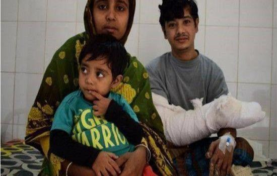

相信很多看过《聊斋志异》的人都曾经看到过这样的一个画面，比如说是一个树精的话，那么在这个树精的身上就一定会有着树枝出现，这样既是代表着它的身份，同样也是因为这个树精还没有足够的“法力”，还不足以支撑它能够完全的变成人的模样。在这样的恐怖小说当中，都有着这样的描写；在以前人们也都会相信，有这样的树精的存在，但是现在如果有人说这样的话的话，那么人们也就只会觉得这个人可能是有些毛病吧。随着时代的进步，人们也都知道了，这样的事情之所以会出现，实际上只是人类自己的一种现象，并非是在现实生活当中真正出现的这样的事情，如果这个世界上真的有树精的话，那么在这个世界上所有的一切也都能够“成精”了，显然这样的事情是根本不可能会发生的。
虽说在这个世界上，是没有树精的存在，但是有些时候，疾病往往比“精”还要厉害，即使不是传说当中的树精，也能够把人们折磨成为一个树精一样的样子。
据了解，在印度有一名男子就患上了一种非常奇怪的疾病，这个疾病使得他成为了一个“半人半树”的怪物，几乎就像是鬼神小说当中写道的那样，人的身体当中，一半是人组成的，一半是树组成的；人们对于在这名男子身上发生的事情都感到非常的疑惑，毕竟这样的现象在人类的身体当中出现，还真的是头一次，人们也不知道究竟是因为什么样的原因，才让这名男子成为了现今的模样。当人们见到这名男子的时候，首先会会被他的身体吓到，因为他的四肢都已经完全像是树一样的形状了，几乎可以说是盘根错节的树枝，缠绕在他的身上；除了四肢有了这样的改变之外，在他的身体的其他的部位，还有着很多的小疙瘩，就像是树皮上面长出来的那样，几乎让人相信，这个人是不是就是一颗树变的。
虽然人们也都知道，在世界上根本就不会有什么树精的存在，但是像是这名男性身体当中发生的事情，却叫人不得不多想。据了解，在这名男子的身上，出现这样的事情也是非常意外的，此前的他也是非常健康的，和正常人都是一样的，皮肤上既没有这样的疙瘩，四肢也没有这样的“变异”出现，然而这样本来健康的身体在一场灾难之后却通通都改变了，自己是身体上呀开始莫名其妙的就出现了一些小疙瘩，在最开始的时候，他还并没有太过在意，但是没有想到的是，这些看似不起眼的小疙瘩竟然会漫遍他的全身，知道现在成为了这个模样。
人们自然是不会相信，这样的事情是一种诅咒或者是什么鬼神，而根据美国的一位著名的皮肤病专家的诊断，这种怪病之所以会出现，实际上是因为在人的身体当中出现的一种病毒，还有一种遗传性的疾病联合出现的结果；正是因为这种遗传病的原因，所以在他的身体当中，免疫系统会非常的脆弱，病毒就很容易能够入侵到他的身体当中，也就形成了现在的模样。根据专家的诊断，这种病毒就是人体乳头状瘤病毒。
因为这种疾病的出现，让他的生活完全停滞不前了，没有办法像正常人一样的走路，更加没有办法工作，这样所带来的结果就是他的生活没有了任何的保障，甚至就连自己的生活也还需要别人的帮助，命名自己要支撑着两个孩子的生活，但是最终却是自己要两个孩子帮助；对于这样的情况也让他非常的痛苦。
在这样的一种情况之下，好在当地的医生们都伸出了援助之手，免费才为他治疗身体的疾病，将他身体当中的已经出现的这种树状的物质进行了切除的手术，让后再将自己身体当中正常的皮肤移植过来；也正是在医生们精心的治疗之下，现在的他也开始慢慢的恢复了正常人的生活，虽然现在还没有完全的康复，但是这样的改善已经让他兴奋不已了。现在这名男子已经经历了多次的手术治疗，根据医生的诊断，现在的他再经历几次手术的话，基本上也就能够和正常人一样的生活了，这样的话他也就能够继续的赚钱养家了，现在的他也在期待着这一天的到来。
